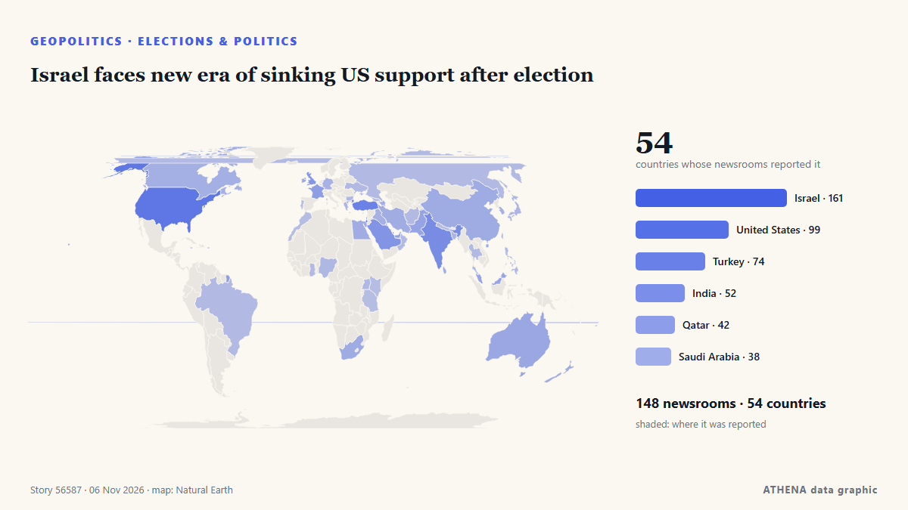

Israel faces new era of sinking US support after election

LONDON: It is a measure of how much is at stake in Tuesday’s legislative election in Israel, and how finely balanced the outcome might be, that a record 22,000 police officers have been deployed in… de Arab News
Informado de forma independiente por 148 medios de 54 países desde el 24 oct; el primero fue Responsible Statecraft; la cobertura está en su punto álgido. ATHENA califica el riesgo como elevado (5.0/10), sobre todo por la gravedad del daño descrito y su alcance geográfico y sectorial. La confianza es del 90 % (alta): lo corroboran 148 medios independientes, con una fiabilidad media de las fuentes del 73 %. Medios por país: Israel (15), Estados Unidos (5), India (3). Cobertura: del 24 oct al 28 oct, 101 horas.
Por qué importa: Los hechos de seguridad y diplomacia pueden alterar alianzas, comercio y mercados mucho más allá de los países implicados.
Qué ha cambiado: 47 informaciones nuevas de 29 redacciones en las 24 horas hasta el 6 nov.
Primer titular: Israel counts votes with Netanyahu’s future on the line
Los titulares se muestran en inglés, tal como se publicaron.
De un vistazo
Seleccionado, puntuado y redactado por la metodología publicada de ATHENA. Ningún editor interviene en eventos concretos. Cómo se elabora ›
| 24 Oct 04:05 UTC | 1 |
|---|---|
| 24 Oct 16:05 UTC | 0 |
| 25 Oct 04:05 UTC | 0 |
| 25 Oct 16:05 UTC | 0 |
| 26 Oct 04:05 UTC | 1 |
| 26 Oct 16:05 UTC | 3 |
| 27 Oct 04:05 UTC | 7 |
| 27 Oct 16:05 UTC | 21 |
| 28 Oct 04:05 UTC | 35 |
| 28 Oct 16:05 UTC | 45 |
| 29 Oct 04:05 UTC | 60 |
| 29 Oct 16:05 UTC | 138 |
| 30 Oct 04:05 UTC | 114 |
| 30 Oct 16:05 UTC | 31 |
| 31 Oct 04:05 UTC | 22 |
| 31 Oct 16:05 UTC | 30 |
| 01 Nov 04:05 UTC | 26 |
| 01 Nov 16:05 UTC | 33 |
| 02 Nov 04:05 UTC | 38 |
| 02 Nov 16:05 UTC | 33 |
| 03 Nov 04:05 UTC | 55 |
| 03 Nov 16:05 UTC | 41 |
| 04 Nov 04:05 UTC | 52 |
| 04 Nov 16:05 UTC | 40 |
| 05 Nov 04:05 UTC | 30 |
| 05 Nov 16:05 UTC | 27 |
| 06 Nov 04:05 UTC | 4 |
| 29 Oct 22:24 UTC | 5.2 |
|---|---|
| 29 Oct 22:32 UTC | 4.7 |
| 29 Oct 22:48 UTC | 5.2 |
| 29 Oct 23:01 UTC | 4.7 |
| 29 Oct 23:18 UTC | 5.2 |
| 29 Oct 23:20 UTC | 4.7 |
| 29 Oct 23:27 UTC | 5.2 |
| 29 Oct 23:45 UTC | 4.7 |
| 29 Oct 23:46 UTC | 5.2 |
| 30 Oct 06:41 UTC | 4.7 |
| 30 Oct 06:44 UTC | 5.2 |
| 30 Oct 06:48 UTC | 4.7 |
| 30 Oct 07:24 UTC | 5.2 |
| 30 Oct 07:53 UTC | 4.7 |
| 30 Oct 08:06 UTC | 5.2 |
| 30 Oct 18:55 UTC | 4.7 |
| 30 Oct 22:11 UTC | 5.5 |
| 31 Oct 21:01 UTC | 5.4 |
| 01 Nov 22:57 UTC | 4.9 |
| 02 Nov 09:46 UTC | 4.9 |
| 02 Nov 21:44 UTC | 4.9 |
| 02 Nov 22:05 UTC | 5.5 |
| 02 Nov 22:15 UTC | 4.9 |
| 02 Nov 23:10 UTC | 5.5 |
| 02 Nov 23:16 UTC | 4.9 |
| 03 Nov 18:21 UTC | 4.9 |
| 03 Nov 18:29 UTC | 5.5 |
| 03 Nov 19:13 UTC | 4.9 |
| 03 Nov 23:41 UTC | 5.4 |
| 04 Nov 03:22 UTC | 4.9 |
| 04 Nov 11:54 UTC | 4.9 |
| 04 Nov 12:42 UTC | 5.5 |
| 04 Nov 12:57 UTC | 4.9 |
| 04 Nov 13:20 UTC | 5.5 |
| 04 Nov 21:16 UTC | 5.0 |
| 04 Nov 21:40 UTC | 5.5 |
| 05 Nov 00:51 UTC | 5.4 |
| 05 Nov 19:03 UTC | 5.0 |
| 05 Nov 21:55 UTC | 4.9 |
| 06 Nov 10:03 UTC | 4.7 |
| 06 Nov 12:52 UTC | 5.0 |
Por qué estas cifras
Importancia
Riesgo
Confianza
La cobertura: quién informó y cuándo
titular tal como se publicó · abre el original- Responsible Statecraft · Estados UnidosWhat Israel's razor thin elections mean for Gaza and Iran
- Responsible Statecraft · Estados UnidosMeet the ex-Biden official working hard to rewrite history on Gaza
- Central Banking · Reino UnidoBank of Israel rebukes Netanyahu over sanction evading crypto plan
- Arab News · Arabia SaudíIsrael’s election could reshape its politics, without changing its course on Palestine
- Haaretz (English) · IsraelMy son is back from Gaza. Now it's time to take our country back
- Anadolu Agency (English) · TurquíaIsrael counts votes with Netanyahu’s future on the line
- The Jerusalem Post · IsraelActivists urge voters returning to Israel to save emergency hotline numbers in case of arrest
- Kyiv Post · UcraniaWhat Israel’s Election Could Change for Ukraine and Relations With Russia
- The Jerusalem Post · IsraelSohlberg bars UTJ turnout reports from polling stations; watchdog urges enforcement
- Haaretz (English) · IsraelThese Palestinians woke up on Election Day still unsure whether to vote or boycott
- The Diplomat · JapónThe Future of India-Israel Ties After Israel’s Election
- Tehran Times · IránIsraeli voters chose between ‘rabid yellow dogs and ravenous jackals’
- Haaretz (English) · IsraelNetanyahu has a sword hanging over his head – and Eisenkot can wield it
- The New Arab · INTBen-Gvir scrambles door-to-door for votes as Arab turnout surges
- Haaretz (English) · IsraelWe found the few Israelis who aren't voting – and are willing to talk about it
- The National · Emiratos Árabes Unidos'Call me': Israeli right-wing candidates go door to door pleading for votes
- Haaretz (English) · IsraelNetanyahu films campaign ad at Israeli city hall in violation of election law
- Haaretz (English) · IsraelInside the propaganda machine: How Netanyahu's campaign messages spread
- SABC News · SudáfricaIsrael election will not change fate of Palestinian people: Mbeki
- NDTV · IndiaMassive Arab-Israeli Poll Turnout, Netanyahu's "End To Jewish State" Charge
- France 24 English · FranciaIbrahim Abu Ahmad on Israeli election: 'Crucial for Arab citizens to have ally in Jewish community'
- The New York Times (World) · Estados UnidosIsraeli Voting Ends After Strong Turnout With No Clear Winner
- The New York Times (World) · Estados UnidosTwice before, Netanyahu was ousted then returned to power.
- Times of India · IndiaElection Commision keeps RTI applicant waiting for reply
- Arab News · Arabia SaudíIsrael commits ‘mediacide’ to conceal its atrocities in Gaza, UN expert says
- Middle East Eye · INTPalestinian voter mobilisation a ‘truly historic development’, analyst says
- France 24 English · FranciaBibi's moment of truth: Israel votes in first general election since October 7 attacks
- Haaretz (English) · IsraelMuted mood on Tel Aviv's streets as voters react to Israel's election exit polls
- Haaretz (English) · IsraelHow will Netanyahu try to reframe his defeat as a huge victory
- Haaretz (English) · IsraelNetanyahu's scare campaign against Arab voters ended up pushing them to the polls
- Haaretz (English) · IsraelDecoding Israel's election: This is the jargon you need to know
- NPR · Estados UnidosPartnerships between ICE and local police surge, report finds
- Trinidad Express · Trinidad y TobagoAustin Immigration Lawyer Hosts Livestream To Discuss Immigration News & Updates
- Mehr News (English) · IránVIDEO: Boy bids farewell with sister after shooting by Israel
- The Jerusalem Post · IsraelAfter years of war, division, Israelis vote in record numbers to shape their future - editorial
- The Jerusalem Post · IsraelAnti-Netanyahu bloc vows not to let chance to replace government slip away
- Times of India · India'Whole tide turned': Trump takes credit for Netanyahu's showing in Israel elections
- The Independent · Reino UnidoTrump takes credit for Netanyahu election performance after endorsing Israeli prime minister
- Al Jazeera English · CatarKhouri: Strong Israel-Arab bloc result does not mean Israel has changed
- Haaretz (English) · IsraelIsraeli democracy has been given a chance. It may not get another